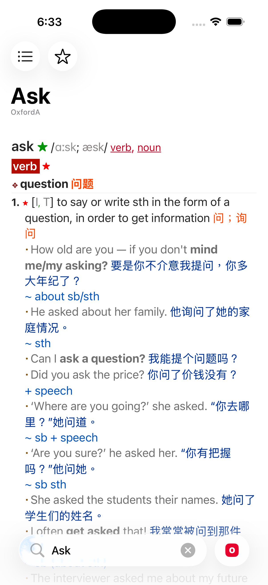
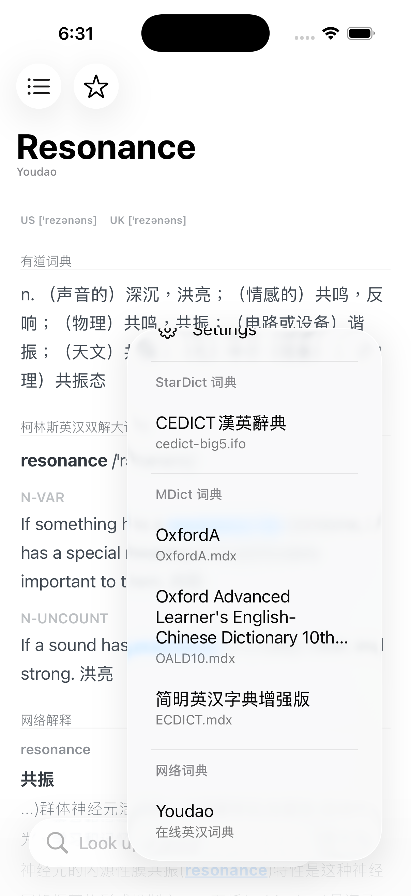
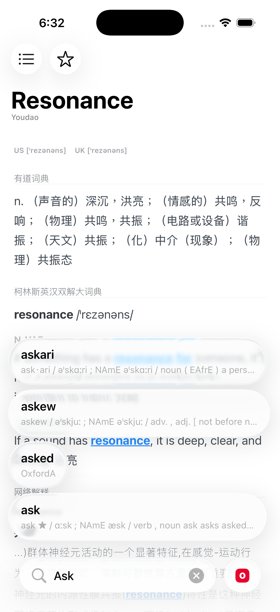
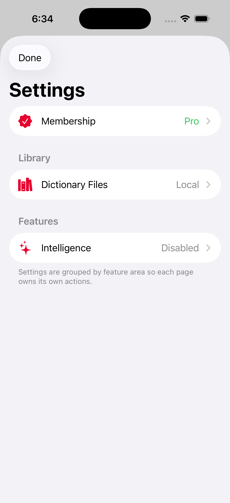

Comfortable lookup
Started as a lightweight Mac and iOS lookup tool with careful typography, dark mode, and low-friction search.
Dictionary lookup · iOS · iPadOS · Apple platforms
aDict keeps lookup close to reading: quick entries, local dictionaries, and personal MDX / MDict files without turning every word into a context switch.

Built for people who read across languages, collect dictionaries, and want a lookup tool that behaves like infrastructure rather than a distraction.
aDict 3.0



Features
Started as a lightweight Mac and iOS lookup tool with careful typography, dark mode, and low-friction search.
Use MDX / MDict files, MDD resources, and matching CSS sidecars without converting a long-kept dictionary collection into an app-only format.
Words, lookup history, saved entries, iCloud documents, and dictionary files are treated as product data, not incidental UI state.
The rewrite includes configurable Intelligence Enrichment fields that can append focused context to lookup results.
History
aDict began as a simple, good-looking lookup utility for programming, reading, and everyday word checks.
Version 2.0 moved the product toward user-owned MDX files, Words, iCloud documents, and iPad workflows.
Version 2.4 dropped subscriptions because a low-frequency, long-lived dictionary tool should stay reliably available.
The current rewrite separates lookup protocol, providers, WebView rendering, local files, and user data, with public beta distribution now prepared.
System
The SwiftUI rewrite owns search, dictionary switching, favorites, settings, StoreKit entitlement state, and the Apple-platform experience.
Youdao, MDict, and StarDict are split into provider packages that emit the same aDictProtocol response envelope.
MDict and StarDict files are scanned from local or iCloud documents, including MDX, MDD, sidecar CSS, and StarDict bundle files.
Lookup history, favorites, and enrichment rules use SQLite / GRDB with CloudKit sync, while generated enrichment cache stays local.
References